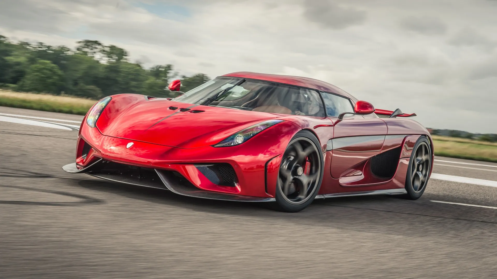

Debuto en el Salon del Automovil de Ginebra de 2010, coincidiendo con el decimoquinto aniversario de la empresa.
Koenigsegg produce autos casi de manera artesanal, por eso son todavia mas exclusivos que los de marcas como Ferrari o Lamborghini,
al nivel de superdeportivos como Bugatti o Pagani.
En 2010 tenia un precio aproximado de US $2 210 000, segun la revista Forbes.
